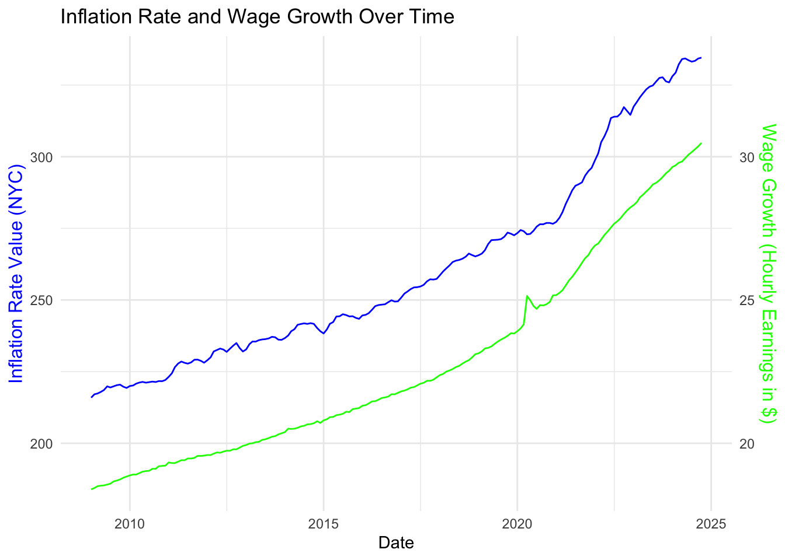
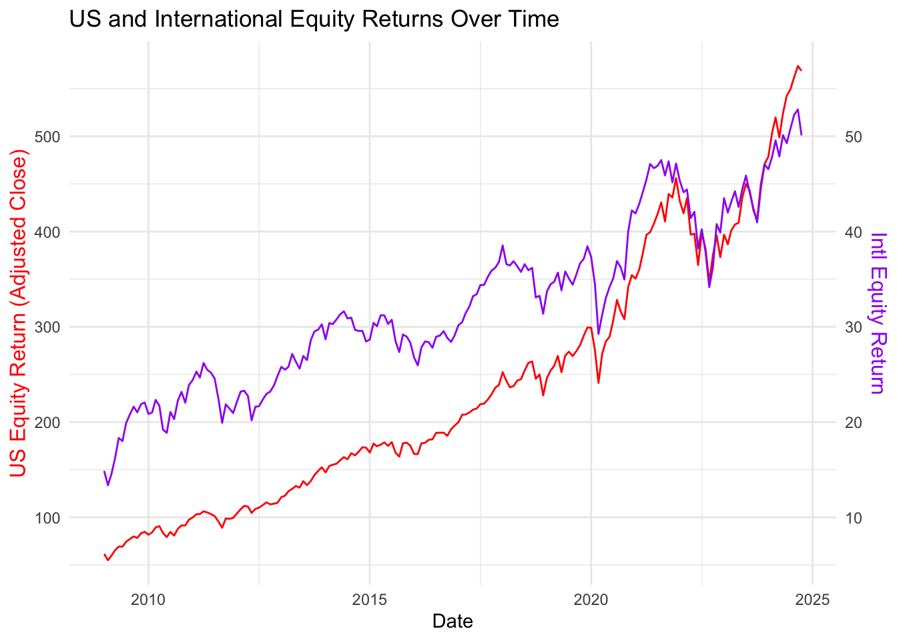
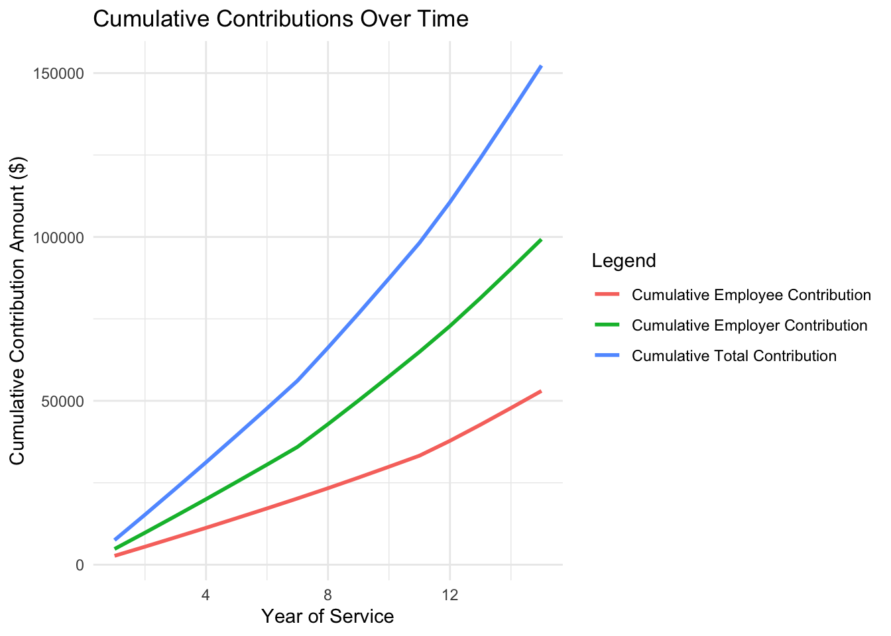
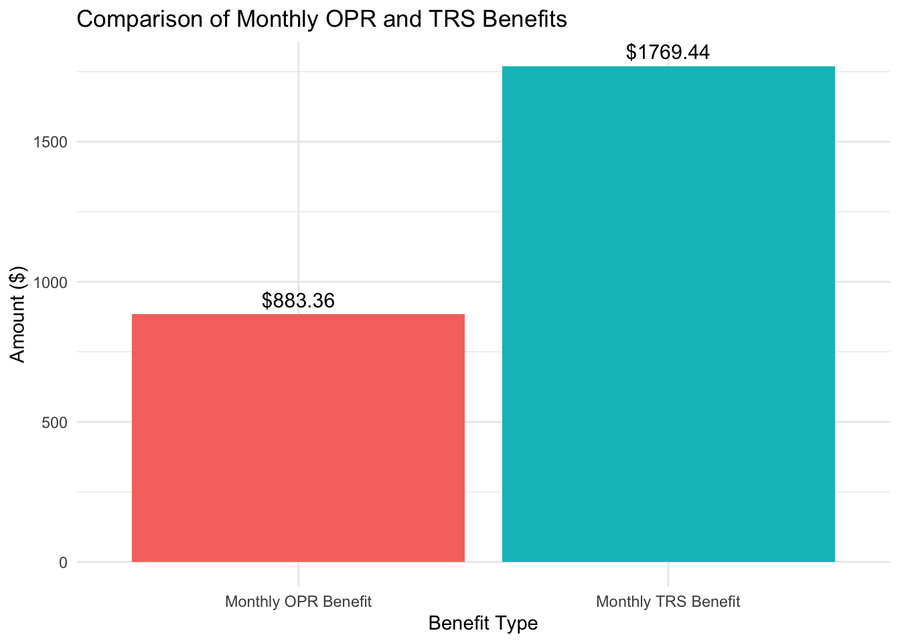
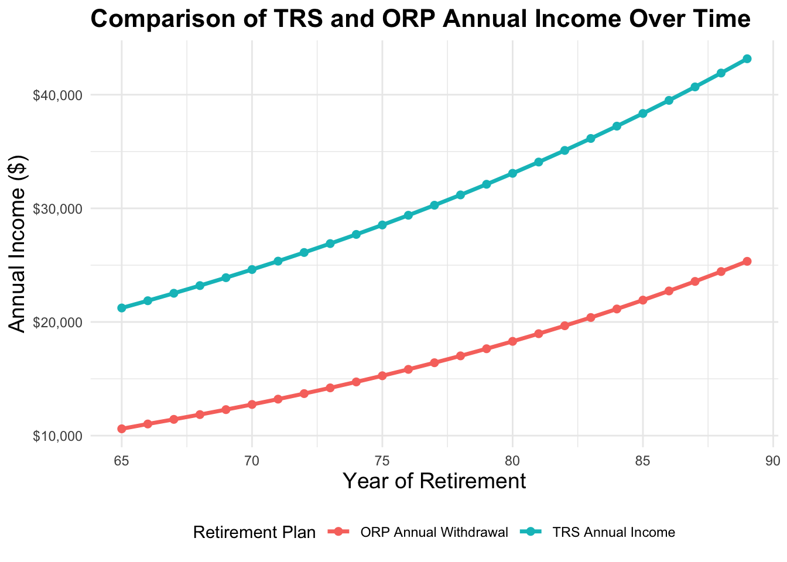
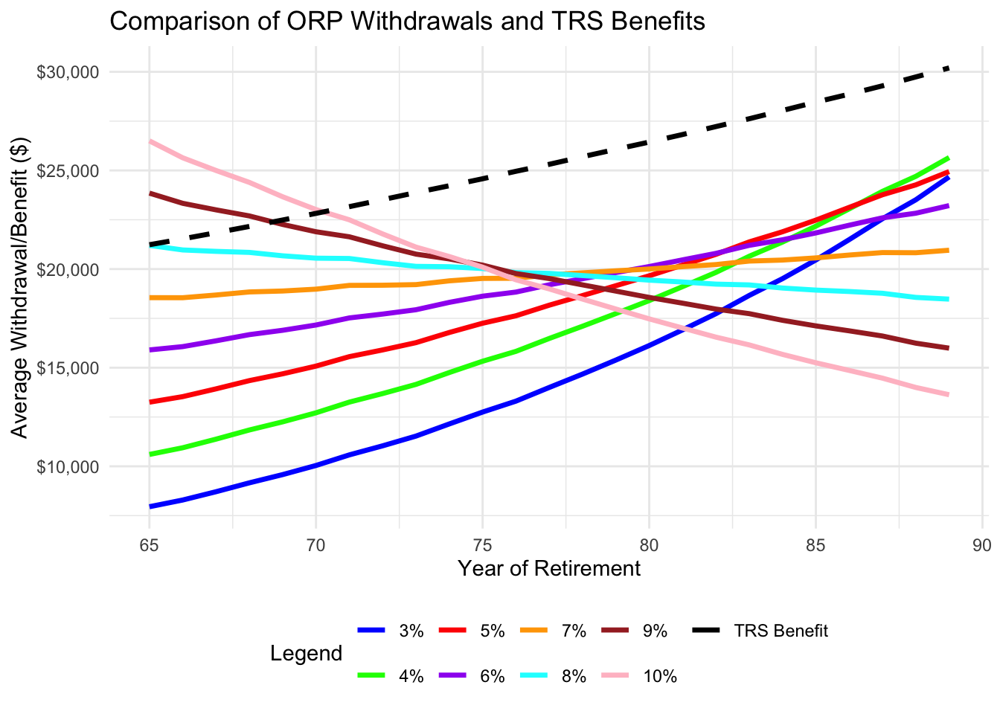
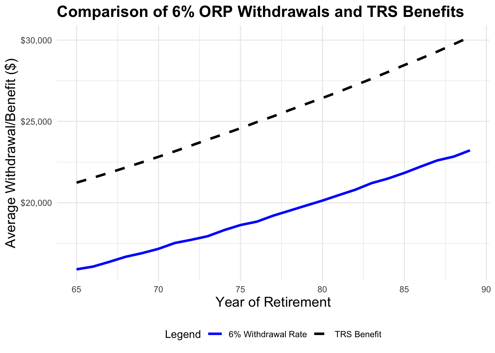

Mini-Project #04: Monte Carlo-Informed Selection of CUNY Retirement Plans
Author
Juan Camilo Martinez Benavides
Introduction
Selecting a retirement plan is one of the most critical financial decisions for new CUNY faculty, as it has permanent implications for their long-term financial security. Once chosen, the plan cannot be changed, making it essential to consider the potential risks and rewards. This project evaluates the Teachers Retirement System (TRS) and the Optional Retirement Plan (ORP) using historical economic data and Monte Carlo simulations. By modeling contributions, investment returns, and inflation-adjusted benefits, we aim to provide a personalized, data-driven recommendation tailored to individual financial goals and risk tolerance.
Objectives
The primary goal of this project is to equip new CUNY faculty with an evidence-based recommendation for selecting the optimal retirement plan (TRS or ORP). This involves analyzing historical economic and financial data to assess how each plan performs under different economic conditions. We will utilize the following datasets:
Rate of Inflation: Inflation erodes the purchasing power of retirement benefits. For TRS, it determines the annual adjustment in benefits, while for ORP, it impacts the real value of savings and withdrawals.
Rate of Wage Growth: Wage growth directly influences contributions to both plans. For TRS, it affects the final average salary (FAS), which determines retirement payouts. For ORP, higher wages lead to larger investment contributions.
US Equity Market Returns: Equity market performance is crucial for ORP participants, as their investments grow with market returns. US equities represent a significant portion of most retirement portfolios.
International Equity Market Returns: Diversification through international equities reduces risk and enhances returns for ORP participants. It provides a broader perspective on investment performance beyond the US market.
Bond Returns: Bonds are a critical component of retirement portfolios, especially for ORP participants as they approach retirement. Bonds provide stability and reduce volatility in investment returns.
Short-Term Debt Returns: Short-term debt, such as Treasury yields, represents a safe investment option with lower risk. It is particularly relevant for retirees seeking liquidity and capital preservation.
By combining insights from these datasets, we will simulate potential retirement outcomes for each plan, identify risks such as running out of funds, and quantify the financial benefits of each option. This comprehensive approach ensures that our recommendation aligns with the diverse financial priorities of faculty members.
Libraries
The following are the libraries we would use throughtout the project.
Show the code
library(httr2) # API requestslibrary(dplyr) # Data manipulationlibrary(ggplot2) # Visualizationlibrary(zoo) # Time-series datalibrary(DT) # Interactive tableslibrary(ggcorrplot) # Correlation plotslibrary(lubridate) # Date/time handlinglibrary(gt) # Publication-quality tableslibrary(plotly) # Interactive plotslibrary(tidyr) # Data reshaping
Data Collection
For this project, we will use data from two economic and financial data sources:
AlphaVantage: A commercial stock market data provider.
FRED: The Federal Reserve Economic Data repository maintained by the Federal Reserve Bank of St. Louis.
FRED is free to access, but AlphaVantage is a commercial service requiring a subscription. For this mini-project, the free tier of AlphaVantage will suffice.
We would proceed to collect the data from the sources mentioned above. and we would do it on a monthly basis for the last 15 years.
To do so, we would use their APIs:
Show the code
# Define the base URL for the FRED APIfred_url <-"https://api.stlouisfed.org/fred/series/observations"# Define the base URL for the AlphaVantage APIalphavantage_url <-"https://www.alphavantage.co/query"# Read FRED API key from a filefred_key <-readLines("fred_key.txt") # Ensure this file contains only your FRED API key# Read AlphaVantage API key from a filealphavantage_key <-readLines("alphavantage_key.txt") # Ensure this file contains only your AlphaVantage API key# Montly basis for the last 15 yearsTime_Montly =as.Date("2009-01-01")
Fetching Data
We already have the links to the resources and the API keys, now we can proceed to fetch the data.
Fetching Rate of Inflation (CPI for NYC Metro Area) from FRED
Show the code
# Fetch Inflation Data from FRED (CPI for NYC Metro Area)inflation_req <-request(fred_url) |>req_url_query(series_id ="CUUR0400SA0", # CPI for All Urban Consumers: NYC Metro Areaapi_key = fred_key,file_type ="json" )inflation_resp <- inflation_req |>req_perform()inflation_data <-resp_body_json(inflation_resp)$observations# Convert to DataFrameinflation_df <-data.frame(date =as.Date(sapply(inflation_data, function(x) x$date)),inflation_rate =as.numeric(sapply(inflation_data, function(x) x$value)))# Filter the data for the last 15 yearsinflation_df <- inflation_df |>filter(date >= Time_Montly)
Fetching Rate of Wage Growth from FRED, We’ll use the AHETPI series to measure wage growth.
Show the code
# Fetch Wage Growth Data from FREDwage_growth_req <-request(fred_url) |>req_url_query(series_id ="AHETPI", # Average Hourly Earnings of Production and Nonsupervisory Employeesapi_key = fred_key,file_type ="json" )wage_growth_resp <- wage_growth_req |>req_perform()wage_growth_data <-resp_body_json(wage_growth_resp)$observations# Convert to a DataFramewage_growth_df <-data.frame(date =as.Date(sapply(wage_growth_data, function(x) x$date)), # Parse datewage_growth =as.numeric(sapply(wage_growth_data, function(x) x$value)) # Convert to numeric)# Filter data for the last 15–20 yearswage_growth_df <- wage_growth_df |>filter(date >= Time_Montly)
Fetching US Equity Market Returns from AlphaVantage
Show the code
# Fetch US Equity Market Data from AlphaVantageus_equity_req <-request(alphavantage_url) |>req_url_query(`function`="TIME_SERIES_MONTHLY_ADJUSTED",symbol ="SPY", # S&P 500 ETFapikey = alphavantage_key )us_equity_resp <- us_equity_req |>req_perform()us_equity_data <-resp_body_json(us_equity_resp)$`Monthly Adjusted Time Series`# Convert to DataFrameus_equity_df <-data.frame(date =as.Date(names(us_equity_data)), # Extract datesus_equity_close =as.numeric(sapply(us_equity_data, function(x) x$`5. adjusted close`)) # Extract adjusted close prices)# Standardize dates to the first of each monthus_equity_df$date <-as.Date(format(us_equity_df$date, "%Y-%m-01"))# Filter for the past 15 yearsus_equity_df <- us_equity_df |>filter(date >= Time_Montly)
Fetching International Equity Market Returns from AlphaVantage
Show the code
# Fetch International Equity Market Data from AlphaVantageintl_req <-request(alphavantage_url) |>req_url_query(`function`="TIME_SERIES_MONTHLY_ADJUSTED",symbol ="VEA", # Vanguard FTSE Developed Markets ETFapikey = alphavantage_key )intl_resp <- intl_req |>req_perform()intl_data <-resp_body_json(intl_resp)$`Monthly Adjusted Time Series`# Convert the fetched data into a data frameintl_equity_df <-data.frame(date =as.Date(names(intl_data)),intl_equity_close =as.numeric(sapply(intl_data, function(x) x$`5. adjusted close`)))# Standardize dates to the first of each monthintl_equity_df$date <-as.Date(format(intl_equity_df$date, "%Y-%m-01"))# Filter for the past 15 yearsintl_equity_df <- intl_equity_df |>filter(date >= Time_Montly)
Fetching Bond Returns from AlphaVantage
Show the code
# Fetch Bond Yield Data (Daily)bond_req <-request(fred_url) |>req_url_query(series_id ="DGS10", # 10-Year Treasury Yieldapi_key = fred_key,file_type ="json" )bond_resp <- bond_req |>req_perform()bond_data <-resp_body_json(bond_resp)$observations# Convert to DataFramebond_df <-data.frame(date =as.Date(sapply(bond_data, function(x) x$date)),bond_yield =as.numeric(sapply(bond_data, function(x) x$value)))# Downsample to Monthly Averagesbond_df <- bond_df |>mutate(month =format(date, "%Y-%m")) |># Extract year-month for groupinggroup_by(month) |>summarize(bond_yield =mean(bond_yield, na.rm =TRUE), # Average yield for the month.groups ="drop" ) |>mutate(date =as.Date(paste0(month, "-01"))) |># Convert back to Dateselect(date, bond_yield)# Filter for the last 15 yearsbond_df <- bond_df |>filter(date >= Time_Montly)
Fetching Short-Term Debt Returns from AlphaVantage: for this dataset, we need to downsample the daily data to monthly averages to align with the other datasets.
Show the code
# Fetch Short-Term Debt Data (2-Year Treasury Yield) - Attempt Monthly Queryshort_term_req <-request(fred_url) |>req_url_query(series_id ="DGS2", # 2-Year Treasury Yieldfrequency ="m", # Request monthly data directlyapi_key = fred_key,file_type ="json" )short_term_resp <- short_term_req |>req_perform()short_term_data <-resp_body_json(short_term_resp)$observations# Convert JSON to DataFrameshort_term_df <-data.frame(date =as.Date(sapply(short_term_data, function(x) x$date), format ="%Y-%m-%d"),short_term_yield =as.numeric(sapply(short_term_data, function(x) x$value)))# Filter for the Last 15 Yearsshort_term_df <- short_term_df |>filter(date >= Time_Montly)
Data Preprocessing and Cleaning
Now that we have collected the data, we can proceed to the next step, which is data preprocessing. We we gonna unify the data and deal with missing values by using bootstrapping.
Show the code
# Standardize dates to the first of each month for all datasetsdatasets <-list(inflation_df, wage_growth_df, us_equity_df, intl_equity_df, bond_df, short_term_df)datasets <- datasets |>lapply(\(df) { df$date <-as.Date(format(df$date, "%Y-%m-01")) df })# Unpack datasets backinflation_df <- datasets[[1]]wage_growth_df <- datasets[[2]]us_equity_df <- datasets[[3]]intl_equity_df <- datasets[[4]]bond_df <- datasets[[5]]short_term_df <- datasets[[6]]# Create master date sequencedate_seq <-data.frame(date =seq(from =as.Date("2009-01-01"), to =as.Date(format(Sys.Date(), "2024-10-01")), by ="month"))# Perform left joins for all datasetscombined_data <- date_seq |>left_join(inflation_df, by ="date") |>left_join(wage_growth_df, by ="date") |>left_join(us_equity_df, by ="date") |>left_join(intl_equity_df, by ="date") |>left_join(bond_df, by ="date") |>left_join(short_term_df, by ="date")# Handle missing datacombined_data <- combined_data |>mutate(inflation_rate =replace(inflation_rate,is.na(inflation_rate),sample(na.omit(inflation_rate), size =sum(is.na(inflation_rate)), replace =TRUE)),wage_growth =replace(wage_growth,is.na(wage_growth),sample(na.omit(wage_growth), size =sum(is.na(wage_growth)), replace =TRUE)),us_equity_close =replace(us_equity_close,is.na(us_equity_close),sample(na.omit(us_equity_close), size =sum(is.na(us_equity_close)), replace =TRUE)),intl_equity_close =replace(intl_equity_close,is.na(intl_equity_close),sample(na.omit(intl_equity_close), size =sum(is.na(intl_equity_close)), replace =TRUE)),bond_yield =replace(bond_yield,is.na(bond_yield),sample(na.omit(bond_yield), size =sum(is.na(bond_yield)), replace =TRUE)),short_term_yield =replace(short_term_yield,is.na(short_term_yield),sample(na.omit(short_term_yield), size =sum(is.na(short_term_yield)), replace =TRUE)) ) |>mutate(across(where(is.numeric), ~round(., 2)))# Display dataset interactivelyDT::datatable(combined_data, options =list(pageLength =10, scrollX =TRUE))
Initial Analysis
Now that we have a clean dataset, we can perform some initial analysis to understand the trends and relationships between the variables.
We will visualize the data using line plots and we going to display them in pairs to compare the trends between the variables. so it would be inflation rate and wage growth, US equity and International equity, and Bond Yield and Short-Term Yield.
Show the code
# Create plot for Inflation Rate and Wage Growth with corrected labels and separate y-axesp1 <-ggplot(combined_data, aes(x = date)) +# Inflation Rategeom_line(aes(y = inflation_rate), color ="blue") +scale_y_continuous(name ="Inflation Rate Value (NYC)", # Corrected label for inflation ratesec.axis =sec_axis(~ . *0, name =" ") # Create empty secondary axis for separation ) +# Wage Growth (scaled for visibility)geom_line(aes(y = wage_growth *10), color ="green") +scale_y_continuous(name ="Inflation Rate Value (NYC)", # Corrected label for wage growthsec.axis =sec_axis(~ . /10, name ="Wage Growth (Hourly Earnings in $)") # Corrected secondary label ) +labs(title ="Inflation Rate and Wage Growth Over Time", x ="Date") +theme_minimal() +theme(axis.title.y.left =element_text(color ="blue", size =12),axis.title.y.right =element_text(color ="green", size =12) )# Create plot for US Equity and International Equityp2 <-ggplot(combined_data, aes(x = date)) +# US Equity Returngeom_line(aes(y = us_equity_close), color ="red") +scale_y_continuous(name ="US Equity Return (Adjusted Close)" ) +# International Equity Return (scaled for visibility)geom_line(aes(y = intl_equity_close *10), color ="purple") +scale_y_continuous(name ="US Equity Return (Adjusted Close)",sec.axis =sec_axis(~ . /10, name ="Intl Equity Return") ) +labs(title ="US and International Equity Returns Over Time", x ="Date") +theme_minimal() +theme(axis.title.y.left =element_text(color ="red", size =12),axis.title.y.right =element_text(color ="purple", size =12) )# Create plot for Bond Yield and Short-Term Yield p3 <-ggplot(combined_data, aes(x = date)) +# Bond Yieldgeom_line(aes(y = bond_yield *2), color ="orange") +scale_y_continuous(name ="Bond Yield (%)", sec.axis =sec_axis(~ . /2, name ="Bond Yield (%)") ) +# Short-Term Yieldgeom_line(aes(y = short_term_yield *2), color ="brown") +scale_y_continuous(name ="Short-Term Yield (%)", sec.axis =sec_axis(~ . /2, name ="Short-Term Yield (%)") ) +labs(title ="Bond Yield and Short-Term Yield Over Time", x ="Date") +theme_minimal() +theme(axis.title.y.left =element_text(color ="orange", size =12),axis.title.y.right =element_text(color ="brown", size =12) )# Display all three plotsp1

Show the code
p2

Show the code
p3
We can see a clear correlation between some of this plots. For example, the inflation rate and wage growth are highly correlated, as well as the US and International Equity Returns.
Correlation matrix
We will calculate the correlation matrix to understand the relationships between the variables. This will help us identify any significant correlations that can inform our analysis and decision-making process.
Show the code
# Select only numeric columnsnumeric_data <- combined_data |>select(where(is.numeric))# Compute the correlation matrixcor_matrix <-cor(numeric_data, use ="complete.obs")# Visualize the correlation matrix using ggcorrplotggcorrplot(cor_matrix, type ="lower", # Only show the lower trianglelab =TRUE, # Show correlation coefficient labelslab_size =3, # Adjust label sizemethod ="circle", # Use circle shapes for correlation valuescolors =c("red", "white", "blue"), # Color scaletitle ="Correlation Matrix", # Plot titleggtheme =theme_minimal(), # Minimalistic themetl.cex =12, # Title label sizetl.col ="black"# Title text color)
In this initial analysis we examine the relationships between several key economic factors, including inflation, wage growth, stock market returns (both US and international), bond yields, and short-term debt yields. Understanding how these factors are correlated can provide valuable insights for making informed financial decisions, particularly for retirement planning.
Key Findings:
1. Inflation Rate and Wage Growth:
Correlation: 0.98 (Very strong)
Interpretation: When inflation increases, wage growth tends to follow suit. This suggests that as the cost of living rises, your wages are likely to increase as well, which helps you keep up with inflation.
2. Stock Market Returns:
US and International Markets:
Correlation: 0.97 (Very strong)
Interpretation: US and international stock markets have a highly positive correlation, meaning they often move in the same direction. This makes diversification between US and international markets a good strategy for reducing risk while maintaining growth potential.
US Equity Returns and Bond Yields:
Correlation: 0.68 (Moderate)
Interpretation: The moderate correlation suggests that when US stocks perform well, bond yields may not follow the same trend. Investors need to balance their portfolios between stocks and bonds, taking into account their risk tolerance and time horizon.
3. Inflation and Other Variables:
Inflation and US Stock Returns:
Correlation: 0.92 (Strong)
Interpretation: Inflation and US stock returns are highly correlated. As inflation rises, US stocks tend to perform well, making stocks a potential hedge against inflation.
Inflation and International Stock Returns:
Correlation: 0.97 (Very strong)
Interpretation: Like US stocks, international stocks also tend to rise with inflation, making global diversification a viable strategy for mitigating inflation risk.
Inflation and Bond Yields:
Correlation: 0.72 (Moderate)
Interpretation: Inflation and bond yields are moderately correlated. Rising inflation generally leads to higher bond yields, which can help protect fixed-income investments from losing purchasing power.
4. Bond Yield and Short-Term Yield:
Correlation: 0.75 (Strong)
Interpretation: Bond yields and short-term yields tend to move in the same direction, which suggests that both types of bonds respond similarly to changes in interest rates.
Implications for Retirement Planning:
Wage Growth and Inflation: The close correlation between wage growth and inflation means that as prices rise, your income should likely increase, helping you maintain purchasing power in retirement.
Equity Market Performance: The strong correlation between US and international equity returns allows for diversification between these markets without sacrificing performance.
Bonds and Short-Term Yields: Understanding the relationship between bonds and short-term debt yields is crucial for managing fixed-income investments in a rising interest rate environment.
Historical Comparison of TRS and ORP
Now, we want to compare this two models by evaluating the same initial salary and years of service, in that way we would choose the best model possible. We would have to take the following in consideration:
Initial Setup and Parameters
Initial Salary: $60,000.
Years of Service: 15 years.
Salary Growth: Modeled using year-over-year CPI growth, calculated from the combined_data dataset.
Adjusted allocations for US equities, international equities, and bonds based on age brackets:
Ages 50-59: Higher equity allocation.
Ages 60-74: Increased bond allocation to have more stability.
Calculated annual performance for each asset class using growth rates from the combined_data dataset:
US and international equity growth based on stock market performance.
Bond yields calculated as annual averages.
Simulated yearly portfolio performance using contributions and compound growth.
Computed the Total Accumulated Value at the end of 15 years.
Estimated the Annual ORP Benefit as 4% of the final accumulated value.
The following code snippets will calculate the retirement benefits for both TRS and ORP based on the assumptions outlined above. We will compare the monthly benefits and accumulated funds for each plan to provide a comprehensive analysis of the retirement options.
Show the code
# Set initial salary and define years of serviceinitial_salary <-60000years_of_service <-15# Adjusted to 15 years# Initialize a vector to store salaries for each yearsalaries <-numeric(years_of_service)salary_growth <-numeric(years_of_service)cpi_growth <-numeric(years_of_service)salary_increase <-numeric(years_of_service)# Set the first salary as the initial salarysalaries[1] <- initial_salary# Loop through the combined data for yearly salary growth calculationfor (i in2:years_of_service) {# We need CPI data for each September to calculate the salary for the next year# Calculate the CPI growth between September (from the previous year) and September of the current year september_cpi_previous_year <- combined_data$inflation_rate[which(month(combined_data$date) ==9&year(combined_data$date) ==2008+ (i -1))] september_cpi_current_year <- combined_data$inflation_rate[which(month(combined_data$date) ==9&year(combined_data$date) ==2008+ i)]# Calculate the salary growth rate based on CPI change cpi_growth[i] <- september_cpi_current_year / september_cpi_previous_year salary_growth[i] <- cpi_growth[i]# Calculate the increase in salary salary_increase[i] <- salaries[i-1] * (cpi_growth[i] -1) # Difference from the previous salary# Apply the salary growth to the previous year's salary salaries[i] <- salaries[i-1] * cpi_growth[i] }# Calculate Final Average Salary (FAS) - which is the average of the last 3 years' salaryfas <-mean(salaries[(years_of_service-2):years_of_service])# Calculate the Annual Retirement Benefit based on years of serviceif (years_of_service <=20) { annual_benefit_trs <-0.0167* fas * years_of_service} elseif (years_of_service ==20) { annual_benefit_trs <-0.0175* fas * years_of_service} else { annual_benefit_trs <- (0.35+0.02* years_of_service) * fas}# Prepare the data for the tabletrs_benefit_data <-data.frame(Benefit_Type =c("Annual TRS Benefit", "Monthly TRS Benefit"),Amount =c(round(annual_benefit_trs, 2), round(annual_benefit_trs /12, 2)))# Create and display the table using gttrs_benefit_data |>gt() |>tab_header(title ="TRS Benefit Summary",subtitle ="Annual and Monthly TRS Benefits" ) |>fmt_currency(columns ="Amount",currency ="USD" ) |>cols_label(Benefit_Type ="Benefit Type",Amount ="Amount ($)" ) |>tab_options(table.font.size ="medium",heading.align ="center" )
TRS Benefit Summary
Annual and Monthly TRS Benefits
Benefit Type
Amount ($)
Annual TRS Benefit
$21,233.31
Monthly TRS Benefit
$1,769.44
We can notice the money a professor would get from the TRS plan. Now we would calculate the contributions for the OPR plan.
Show the code
# Initialize parametersinitial_salary <-60000# Starting salaryyears_of_service <-15# Number of years to simulate# Set up salary contribution bracketssalary_brackets <-c(45000, 55000, 75000, 100000)# Initialize vectors to store resultssalaries <-numeric(years_of_service)employee_contributions <-numeric(years_of_service)employer_contributions <-numeric(years_of_service)total_contributions <-numeric(years_of_service)# Initialize the first year's salarysalaries[1] <- initial_salary# Loop through each year and compute the contributionsfor (i in1:years_of_service) {# Get the salary for the yearif (i ==1) { salary <- initial_salary } else {# Calculate salary growth based on CPI (only starting from the second year) september_cpi_previous_year <- combined_data$inflation_rate[which(month(combined_data$date) ==9&year(combined_data$date) ==2009+ (i -1))] september_cpi_current_year <- combined_data$inflation_rate[which(month(combined_data$date) ==9&year(combined_data$date) ==2009+ i)]# Calculate the salary growth rate based on CPI change (year over year growth) cpi_growth <- september_cpi_current_year / september_cpi_previous_year salary <- salaries[i -1] * cpi_growth # Update salary based on CPI growth }# Store the salary for each year salaries[i] <- salary# Employee contribution calculation based on salary brackets (annual contribution)if (salary <= salary_brackets[1]) { employee_contribution_annual <- salary *0.03 } elseif (salary <= salary_brackets[2]) { employee_contribution_annual <- salary *0.035 } elseif (salary <= salary_brackets[3]) { employee_contribution_annual <- salary *0.045 } elseif (salary <= salary_brackets[4]) { employee_contribution_annual <- salary *0.0575 } else { employee_contribution_annual <- salary *0.06 }# Employer contribution: 8% for the first 7 years, 10% after (annual contribution)if (i <=7) { employer_contribution_annual <- salary *0.08 } else { employer_contribution_annual <- salary *0.10 }# Total contribution for the year total_contribution_annual <- employee_contribution_annual + employer_contribution_annual# Store contributions employee_contributions[i] <- employee_contribution_annual employer_contributions[i] <- employer_contribution_annual total_contributions[i] <- total_contribution_annual}# Create the table with the results for each yearyearly_contributions_data <-data.frame(Year =1:years_of_service,Salary =round(salaries, 2),Employee_Contribution =round(employee_contributions, 2),Employer_Contribution =round(employer_contributions, 2),Total_Contribution =round(total_contributions, 2))# Calculate cumulative contributionsyearly_contributions_data$Cumulative_Employee_Contribution <-cumsum(yearly_contributions_data$Employee_Contribution)yearly_contributions_data$Cumulative_Employer_Contribution <-cumsum(yearly_contributions_data$Employer_Contribution)yearly_contributions_data$Cumulative_Total_Contribution <-cumsum(yearly_contributions_data$Total_Contribution)# Visualization for cumulative contributionslibrary(ggplot2)ggplot(yearly_contributions_data, aes(x = Year)) +geom_line(aes(y = Cumulative_Employee_Contribution, color ="Cumulative Employee Contribution"), size =1) +geom_line(aes(y = Cumulative_Employer_Contribution, color ="Cumulative Employer Contribution"), size =1) +geom_line(aes(y = Cumulative_Total_Contribution, color ="Cumulative Total Contribution"), size =1) +labs(title ="Cumulative Contributions Over Time",x ="Year of Service",y ="Cumulative Contribution Amount ($)",color ="Legend" ) +theme_minimal()

Show the code
# Initialize parameters for ORP calculations# Age 50 to 59equity_us_alloc_50_59 <-0.47# US Equities allocationequity_international_alloc_50_59 <-0.32# International Equities allocationbonds_alloc_50_59 <-0.21# Bonds allocation# Age 60 to 74equity_us_alloc_60_74 <-0.34# US Equities allocationequity_international_alloc_60_74 <-0.23# International Equities allocationbonds_alloc_60_74 <-0.43# Bonds allocation# Initialize vectors to store resultsperformance_us_equity <-numeric(years_of_service)performance_international_equity <-numeric(years_of_service)performance_bonds <-numeric(years_of_service)total_accumulated <-numeric(years_of_service) # Total accumulated amount# Starting balancetotal_accumulated[1] <- yearly_contributions_data$Total_Contribution[1]# Start contributing at age 50 in 2009starting_age <-50# Loop through each year to compute performancefor (i in1:years_of_service) { current_year <-2009+ i -1# Current year next_year <- current_year +1# Next year current_age <- starting_age + i -1# Current age# Assign allocations based on ageif (current_age >=50&& current_age <=59) { equity_us_alloc <- equity_us_alloc_50_59 equity_international_alloc <- equity_international_alloc_50_59 bonds_alloc <- bonds_alloc_50_59 } elseif (current_age >=60&& current_age <=74) { equity_us_alloc <- equity_us_alloc_60_74 equity_international_alloc <- equity_international_alloc_60_74 bonds_alloc <- bonds_alloc_60_74 }# Ensure we have data for the future January, or use November of the current year if not availableif (i == years_of_service) {# For the last year, use November data instead of January of the next year us_equity_growth <- combined_data$us_equity_close[which(year(combined_data$date) == current_year &month(combined_data$date) ==11)] / combined_data$us_equity_close[which(year(combined_data$date) == current_year &month(combined_data$date) ==1)] intl_equity_growth <- combined_data$intl_equity_close[which(year(combined_data$date) == current_year &month(combined_data$date) ==11)] / combined_data$intl_equity_close[which(year(combined_data$date) == current_year &month(combined_data$date) ==1)] bond_yield_annual <-mean(combined_data$bond_yield[which(year(combined_data$date) == current_year &month(combined_data$date) <=11)]) /100+1 } else {# For all other years, use January of the next year us_equity_growth <- combined_data$us_equity_close[which(year(combined_data$date) == next_year &month(combined_data$date) ==1)] / combined_data$us_equity_close[which(year(combined_data$date) == current_year &month(combined_data$date) ==1)] intl_equity_growth <- combined_data$intl_equity_close[which(year(combined_data$date) == next_year &month(combined_data$date) ==1)] / combined_data$intl_equity_close[which(year(combined_data$date) == current_year &month(combined_data$date) ==1)] bond_yield_annual <-mean(combined_data$bond_yield[which(year(combined_data$date) == current_year)]) /100+1 }# Store individual performance values performance_us_equity[i] <- us_equity_growth performance_international_equity[i] <- intl_equity_growth performance_bonds[i] <- bond_yield_annual # Already adjusted with +1# Calculate total accumulated with contributions and compound effectif (i ==1) {# First year: Apply performance to the first contribution total_accumulated[i] <- yearly_contributions_data$Total_Contribution[i] * ( (equity_us_alloc * performance_us_equity[i]) + (equity_international_alloc * performance_international_equity[i]) + (bonds_alloc * performance_bonds[i]) ) } else {# Subsequent years: Include previous accumulated total and current contributions total_accumulated[i] <- (total_accumulated[i -1] + yearly_contributions_data$Total_Contribution[i]) * ( (equity_us_alloc * performance_us_equity[i]) + (equity_international_alloc * performance_international_equity[i]) + (bonds_alloc * performance_bonds[i]) ) }}# Create a data frame with the resultsyearly_performance_data <-data.frame(Year =2009:(2009+ years_of_service -1),Age = starting_age:(starting_age + years_of_service -1),US_Equity_Performance =round(performance_us_equity, 4),International_Equity_Performance =round(performance_international_equity, 4),Bonds_Performance =round(performance_bonds, 4),Total_Accumulated =round(total_accumulated, 2))library(gt)annual_benefit_opr <-0.04* yearly_performance_data$Total_Accumulated[years_of_service]monthly_benefit_opr <- annual_benefit_opr /12opr_benefit_table <-data.frame(Metric =c("Annual OPR Benefit", "Monthly OPR Benefit"),Amount =c(round(annual_benefit_opr, 2), round(monthly_benefit_opr, 2)))opr_benefit_table |>gt() |>tab_header(title ="OPR Benefit Summary",subtitle =paste("Year", years_of_service, "Calculation") ) |>fmt_currency(columns ="Amount",currency ="USD" ) |>cols_label(Metric ="Benefit Type",Amount ="Amount ($)" ) |>tab_style(style =list(cell_text(weight ="bold") ),locations =cells_column_labels(everything()) )
OPR Benefit Summary
Year 15 Calculation
Benefit Type
Amount ($)
Annual OPR Benefit
$10,600.32
Monthly OPR Benefit
$883.36
Show the code
# Calculate total accumulated contributions over timetotal_contributions <-cumsum(yearly_contributions_data$Total_Contribution)# Create a data frame for plottingplot_data <-data.frame(Year =2009:(2009+ years_of_service -1),Total_Accumulated = total_accumulated,Total_Contributions = total_contributions)# Create the interactive graphplot <-plot_ly(plot_data, x =~Year) |>add_trace(y =~Total_Accumulated, type ='scatter', mode ='lines+markers', name ='Compounding $',hovertemplate ='Year: %{x}<br>Total Accumulated: %{y:.2f}<extra></extra>') |>add_trace(y =~Total_Contributions, type ='scatter', mode ='lines+markers', name ='Total Contributions',hovertemplate ='Year: %{x}<br>Total Contributions: %{y:.2f}<extra></extra>') |>layout(title ='Interactive Graph: Total Accumulation vs. Contributions',xaxis =list(title ='Year'),yaxis =list(title ='Amount ($)'),legend =list(orientation ='h', x =0.5, xanchor ='center') )plot
In this image we can see clearly the power of compounding. The total accumulated amount grows over time due to the contributions and the compound effect of the investment returns. This visualization provides a clear representation of how the retirement savings can grow over the years, highlighting the importance of consistent contributions and wise investment choices.
Comparative Analysis of TRS and ORP
Show the code
# Calculate monthly benefitsmonthly_benefit_opr <- annual_benefit_opr /12monthly_benefit_trs <- annual_benefit_trs /12# Create a data frame for plottingbenefit_data <-data.frame(Benefit_Type =c("Monthly OPR Benefit", "Monthly TRS Benefit"),Amount =c(monthly_benefit_opr, monthly_benefit_trs))# Create the bar plotbenefit_plot <-ggplot(benefit_data, aes(x = Benefit_Type, y = Amount, fill = Benefit_Type)) +geom_bar(stat ="identity", show.legend =FALSE) +geom_text(aes(label =paste0("$", round(Amount, 2))), vjust =-0.5, size =4) +labs(title ="Comparison of Monthly OPR and TRS Benefits",x ="Benefit Type",y ="Amount ($)" ) +theme_minimal()# Print the plotprint(benefit_plot)

The bar chart illustrates a comparison between the Monthly OPR Benefit and the Monthly TRS Benefit. Key insights from the visualization are as follows:
Monthly OPR Benefit:
The monthly benefit derived from the OPR system is $883.35, as shown by the first bar.
This represents a smaller portion compared to the TRS benefit, reflecting the structure of OPR benefit allocations.
Monthly TRS Benefit:
The monthly benefit derived from the TRS system is $1769.43, as shown by the taller second bar.
This indicates a significantly higher payout, suggesting that the TRS system may provide a more robust financial benefit for retirees compared to the OPR system.
Comparison:
The TRS benefit is nearly double the OPR benefit, highlighting a substantial disparity between the two systems in terms of monthly payouts.
This comparison provides valuable insight into the financial implications of selecting between the OPR and TRS systems, with the TRS system offering higher monthly benefits. This can serve as a crucial factor for decision-making in retirement planning.
Fixed-Rate Analysis
To modify the simulation and project an employee’s pension benefit (TRS) or withdrawal amount (ORP) from retirement until death, we need to consider several key factors:
Retirement Age: The age at which the employee retires and begins receiving benefits.
Death Age: The estimated age at which the employee will pass away.
Show the code
# Parametersretirement_age <-65death_age <-90# Estimated death ageyears_in_retirement <- death_age - retirement_age# Initialize the mean weighted performancemean_performance <-mean( (equity_us_alloc * yearly_performance_data$US_Equity_Performance) + (equity_international_alloc * yearly_performance_data$International_Equity_Performance) + (bonds_alloc * yearly_performance_data$Bonds_Performance),na.rm =TRUE)# Use this value as your fixed return rate for ORPfixed_return_rate <- (mean_performance-1) #based on the performance of from the last 15 years of investments. # Fixed rate assumptionsfixed_return_rate <- fixed_return_rate # Fixed annual return rate for ORPwithdrawal_rate <-0.04# Initial ORP withdrawal rate# Calculate the average inflation from the combined_data datasetavg_inflation <-mean(combined_data$inflation_rate, na.rm =TRUE) /100# Convert to decimal form# Starting valuestrs_annual_benefit <- annual_benefit_trs # TRS annual benefitorp_balance <- yearly_performance_data$Total_Accumulated[years_of_service] # ORP final balance at retirement# Initialize vectors to store resultstrs_benefits <-numeric(years_in_retirement)orp_withdrawals <-numeric(years_in_retirement)orp_balances <-numeric(years_in_retirement)income_gaps <-numeric(years_in_retirement)# Simulationfor (year in1:years_in_retirement) {# TRS Benefit (adjusted for inflation with caps)if (year ==1) { trs_benefits[year] <- trs_annual_benefit } else { cpi_adjustment <-max(min(avg_inflation *0.5, 0.03), 0.01) # Cap between 1% and 3% trs_benefits[year] <- trs_benefits[year -1] * (1+ cpi_adjustment) }# ORP Withdrawal: Fixed percentage of the previous year's balanceif (year ==1) { orp_withdrawals[year] <- orp_balance * withdrawal_rate orp_balance <- orp_balance * (1+ fixed_return_rate) - orp_withdrawals[year] } else { orp_withdrawals[year] <- orp_balances[year -1] * withdrawal_rate orp_balance <- (orp_balances[year -1] - orp_withdrawals[year]) * (1+ fixed_return_rate) }# Ensure balance never goes negative orp_balances[year] <-max(orp_balance, 0)if (orp_balance <=0) { orp_withdrawals[year] <-0 }# Income gap (Annually) income_gaps[year] <- trs_benefits[year] - orp_withdrawals[year]}# Create results data frameresults <-data.frame(Year = retirement_age:(death_age -1),TRS_Annual_Income = trs_benefits,ORP_Annual_Withdrawal = orp_withdrawals,ORP_Balance_Remaining = orp_balances,Income_Gap_Annual = income_gaps)# Prepare data for visualizationgraph_data <- results |>select(Year, TRS_Annual_Income, ORP_Annual_Withdrawal, ORP_Balance_Remaining) |>pivot_longer(cols =c(TRS_Annual_Income, ORP_Annual_Withdrawal),names_to ="Plan",values_to ="Annual_Income" ) |>mutate(Plan =recode( Plan, TRS_Annual_Income ="TRS Annual Income", ORP_Annual_Withdrawal ="ORP Annual Withdrawal" ) )# Plot TRS and ORP incomes over timeincome_plot <- graph_data |>ggplot(aes(x = Year, y = Annual_Income, color = Plan, group = Plan)) +geom_line(size =1.2) +geom_point(size =2) +labs(title ="Comparison of TRS and ORP Annual Income Over Time",x ="Year of Retirement",y ="Annual Income ($)",color ="Retirement Plan" ) +theme_minimal() +theme(legend.position ="bottom",plot.title =element_text(size =16, face ="bold"),axis.title =element_text(size =14) ) +scale_y_continuous(labels = scales::dollar_format())# Display the plotsincome_plot

Comparison of TRS and ORP Income
TRS Income:
TRS income grows steadily, driven by inflation adjustments, ensuring higher and more consistent income throughout retirement.
ORP Withdrawals:
ORP withdrawals grow modestly and lack inflation adjustments, leading to slower income growth over time.
Income Gap:
The gap between TRS and ORP widens significantly, with TRS consistently providing higher income.
Key Insight:
TRS is better for retirees needing stable, inflation-protected income, while ORP offers lower growth and purchasing power over time.
Show the code
# Plot ORP remaining balance over timeorp_balance_plot <- results |>ggplot(aes(x = Year, y = ORP_Balance_Remaining)) +geom_line(color ="blue", size =1.2) +geom_point(size =2) +labs(title ="Growth of ORP Investment Balance Over Time",x ="Year of Retirement",y ="ORP Balance Remaining ($)" ) +theme_minimal() +theme(plot.title =element_text(size =16, face ="bold"),axis.title =element_text(size =14) ) +scale_y_continuous(labels = scales::dollar_format())# Display the ORP balance plotorp_balance_plot
While TRS may provide a higher and more stable income, the ORP plan demonstrates strong growth in its investment balance over time. This highlights the plan’s long-term sustainability. Additionally, ORP offers greater flexibility, giving employees more control over their investments.
One key advantage of ORP is that employees can access the full balance if needed, providing the freedom to use the funds as desired, whether for unexpected expenses, large purchases, or other financial goals. This flexibility makes ORP a viable option for those who value control over their retirement savings.
Monte Carlo Simulation for ORP Plan Retirement Benefits
Monte Carlo simulation is a powerful tool to model the range of possible outcomes for the ORP (Optional Retirement Plan) benefits. By generating multiple scenarios based on random samples of historical data (created using bootstrapping), this approach allows us to evaluate the robustness and performance of the ORP plan under varying conditions.
Simulation Overview
We aim to assess the impact of market conditions and withdrawal rates on the ORP balance over time and evaluate the plan’s sustainability under different scenarios.
Key Considerations
Death Age: 90 years
Retirement Age: 65 years
Withdrawal Rates: 3% to 10%
We will evaluate the impact of different withdrawal rates on the ORP balance over time.
Number of Simulations: 200
This ensures a comprehensive analysis by capturing a wide range of potential outcomes.
Objectives
Simulate Market Conditions:
Use bootstrapped historical data to reflect various possible market scenarios.
Evaluate Withdrawal Strategies:
Analyze how different withdrawal rates impact the sustainability of the ORP plan.
Assess Performance:
Provide insights into the range of possible retirement benefits and identify risks or trends under varying scenarios.
This analysis will allow for a better understanding of the ORP plan’s robustness and help in making informed decisions for financial planning in retirement.
Show the code
# Parametersretirement_age <-65# Retirement start agedeath_age <-90# End of simulation ageyears_in_retirement <- death_age - retirement_age# Step 1: Initial ORP Balanceorp_balance <- yearly_performance_data$Total_Accumulated[nrow(yearly_performance_data)]if (orp_balance ==0||is.na(orp_balance)) stop("ERROR: ORP Balance is zero or NA.")# Portfolio allocationsequity_us_alloc <-0.34equity_international_alloc <-0.23bonds_alloc <-0.43if ((equity_us_alloc + equity_international_alloc + bonds_alloc) !=1) stop("ERROR: Allocations must sum to 1.")# Step 2: Bootstrap CPI Growthseptember_cpi <- combined_data$inflation_rate[month(combined_data$date) ==9]cpi_growth <- september_cpi[-1] / september_cpi[-length(september_cpi)] -1set.seed(42)sampled_inflation <-replicate(200, sample(cpi_growth, years_in_retirement, replace =TRUE))# Step 3: Sample Returnssampled_us_returns <-replicate(200, sample(yearly_performance_data$US_Equity_Performance, years_in_retirement, replace =TRUE))sampled_intl_returns <-replicate(200, sample(yearly_performance_data$International_Equity_Performance, years_in_retirement, replace =TRUE))sampled_bond_returns <-replicate(200, sample(yearly_performance_data$Bonds_Performance, years_in_retirement, replace =TRUE))# Step 4: Simulate for Withdrawal Rates (3% to 10%)withdrawal_rates <-seq(0.03, 0.10, by =0.01)trs_benefits <-matrix(0, nrow =200, ncol = years_in_retirement)# Initialize storage for all resultsall_withdrawal_results <-list()all_balance_results <-list() # To store ORP balances for each withdrawal ratefor (rate in withdrawal_rates) { orp_withdrawals <-matrix(0, nrow =200, ncol = years_in_retirement) # Store withdrawals orp_balances <-matrix(0, nrow =200, ncol = years_in_retirement) # Store balances for each withdrawal ratefor (sim in1:200) { orp_sim_balance <- orp_balance # Reset balance for each simulationfor (year in1:years_in_retirement) {# TRS Benefit Adjustmentif (year ==1) { trs_benefit <- trs_annual_benefit } else { inflation_adjustment <-min(max(sampled_inflation[year, sim] *0.5, 0.01), 0.03) trs_benefit <- trs_benefit * (1+ inflation_adjustment) } trs_benefits[sim, year] <- trs_benefit# ORP Withdrawal Calculation withdrawal <- orp_sim_balance * rate orp_withdrawals[sim, year] <- withdrawal remaining_balance <-max(orp_sim_balance - withdrawal, 0) orp_balances[sim, year] <- remaining_balance # Save balance for the simulationif (remaining_balance <=0) break# Stop simulation if balance is depleted# Apply Weighted Returns weighted_return <- (equity_us_alloc * (sampled_us_returns[year, sim] -1)) + (equity_international_alloc * (sampled_intl_returns[year, sim] -1)) + (bonds_alloc * (sampled_bond_returns[year, sim] -1)) orp_sim_balance <- remaining_balance * (1+ weighted_return) } }# Store Average Withdrawals avg_withdrawals <-colMeans(orp_withdrawals, na.rm =TRUE) result <-data.frame(Year = retirement_age:(death_age -1),Average_Withdrawal = avg_withdrawals,Withdrawal_Rate =paste0(round(rate *100, 1), "%") ) all_withdrawal_results[[paste0("Rate_", round(rate *100, 1))]] <- result# Store the ORP Balances for the Current Rate all_balance_results[[paste0("Rate_", round(rate *100, 1))]] <- orp_balances}# Combine Withdrawal Results for Visualizationcombined_withdrawal_results <-do.call(rbind, all_withdrawal_results)# Add TRS Resultscombined_trs_results <-data.frame(Year = retirement_age:(death_age -1),Average_Withdrawal =colMeans(trs_benefits, na.rm =TRUE),Withdrawal_Rate ="TRS Benefit",Line_Type ="dashed",Legend ="TRS Benefit")# Adjust ORP Results for Consistencycombined_withdrawal_results$Line_Type <-"solid"combined_withdrawal_results$Legend <- combined_withdrawal_results$Withdrawal_Rate# Merge Resultsfinal_combined_results <-rbind(combined_withdrawal_results, combined_trs_results)final_combined_results$Legend <-factor( final_combined_results$Legend, levels =c("3%", "4%", "5%", "6%", "7%", "8%", "9%", "10%", "TRS Benefit"))# Plot Withdrawalswithdrawal_plot <-ggplot(final_combined_results, aes(x = Year, y = Average_Withdrawal, color = Legend, linetype = Line_Type, group = Legend)) +geom_line(size =1.2) +scale_color_manual(values =c("blue", "green", "red", "purple", "orange", "cyan", "brown", "pink", "black")) +scale_linetype_identity() +labs(title ="Comparison of ORP Withdrawals and TRS Benefits",x ="Year of Retirement",y ="Average Withdrawal/Benefit ($)",color ="Legend" ) +theme_minimal() +theme(legend.position ="bottom") +scale_y_continuous(labels = scales::dollar_format())# Combine Balance Results for Visualizationcombined_balance_results <-do.call(rbind, lapply(seq_along(all_balance_results), function(i) { avg_balance <-colMeans(all_balance_results[[i]], na.rm =TRUE) # Compute average balancesdata.frame(Year = retirement_age:(death_age -1),Average_Balance = avg_balance,Withdrawal_Rate =paste0(round(withdrawal_rates[i] *100, 1), "%") # Match withdrawal rate )}))# Plot Balancesbalance_plot <-ggplot(combined_balance_results, aes(x = Year, y = Average_Balance, color = Withdrawal_Rate, group = Withdrawal_Rate)) +geom_line(size =1.2) +scale_color_manual(values =c("blue", "green", "red", "purple", "orange", "cyan", "brown", "pink")) +labs(title ="Comparison of ORP Balances Across Withdrawal Rates",x ="Year of Retirement",y ="Average ORP Balance ($)",color ="Withdrawal Rate" ) +theme_minimal() +theme(legend.position ="bottom") +scale_y_continuous(labels = scales::dollar_format())# Display Plotswithdrawal_plot

We clearly see that the TRS is a better model for retirement. The TRS benefit remains stable and increases over time due to inflation adjustments, providing a reliable income source for retirees. Also, we decided to compare the ORP withdrawals at different rates. Appreciating a huge gap just by changing one percent. Making it a clear factor when comes down to retirement planning.
Show the code
balance_plot
Also, we want to see the average balance of the ORP plan over time. The line graph illustrates the average ORP balances across different withdrawal rates over the retirement period. Key insights from the visualization are as follows:
Withdrawal Rates:
The graph shows the average ORP balance for withdrawal rates ranging from 3% to 10%.
The 6% withdrawal rate maintains a stable balance over time, providing a consistent income stream for retirees, and still increase its value.
The 10% withdrawal rate depletes the ORP savings too quickly, indicating a high-risk strategy.
The 3% withdrawal rate is overly conservative, resulting in a slow depletion of savings and lower income.
This plan is recommended for those who want to have a stable income over time and may want to liquidate in the future or pass it on to their partners or children.
After getting this information, we want to make sure that the ORP plan is sustainable and will not run out of money before the retiree passes away. In that way, we would make sure that the retiree will have a stable income over time.
Show the code
# Split orp_balances into a list based on withdrawal ratesorp_balances <-split(orp_balances, rep(1:length(withdrawal_rates), each = years_in_retirement))# Convert each list element to a matrix for simulationorp_balances <-lapply(orp_balances, function(x) matrix(x, nrow =200, ncol = years_in_retirement))# Calculate probabilities of exhaustion for each withdrawal rateexhaust_probabilities <-sapply(seq_along(withdrawal_rates), function(rate_index) { current_balance <- orp_balances[[rate_index]] # Get balances for the current rate exhausted <-apply(current_balance, 1, function(sim_row) any(sim_row[1:(years_in_retirement -1)] ==0)) # Check if exhaustedmean(exhausted) *100# Return percentage of exhausted simulations})# Create a data frame for resultsexhaustion_table <-data.frame(Withdrawal_Rate =paste0(round(withdrawal_rates *100, 1), "%"),Probability =as.numeric(round(exhaust_probabilities, 2)))# Load the gt library for table formattinglibrary(gt)# Generate a formatted table with resultsgt_exhaustion_table <- exhaustion_table |>gt() |>tab_header(title ="Probability of ORP Savings Exhaustion",subtitle ="Before Death by Withdrawal Rate" ) |>fmt_number(columns =c(Probability), # Updated syntaxdecimals =2 ) |>cols_label(Withdrawal_Rate ="Withdrawal Rate",Probability ="Exhaustion Probability (%)" ) |>tab_source_note(source_note ="Data simulated using Monte Carlo bootstrapping." )# Display the tablegt_exhaustion_table
Probability of ORP Savings Exhaustion
Before Death by Withdrawal Rate
Withdrawal Rate
Exhaustion Probability (%)
3%
0.00
4%
0.00
5%
0.00
6%
0.00
7%
0.00
8%
0.00
9%
0.00
10%
0.00
Data simulated using Monte Carlo bootstrapping.
In all cases, the ORP plan is sustainable. However, we have to take into consideration that the models with a that 7 percent, would have a negative growth in terms of withdrawals. This means that the retiree would have to adjust the withdrawal rate to a lower percentage to make sure that the ORP plan is sustainable.
We want to keep digging on the ORP plan and see if the retiree would have a higher income than the TRS plan.
Show the code
# Initialize vector to store probabilities for each withdrawal ratehigher_income_probabilities <-numeric(length(withdrawal_rates))# Loop through withdrawal ratesfor (i inseq_along(withdrawal_rates)) { rate <- withdrawal_rates[i] higher_income_count <-0# Iterate over yearsfor (year in1:years_in_retirement) { higher_income_count <- higher_income_count +sum(orp_withdrawals[, year] > trs_benefits[, year]) }# Calculate probability higher_income_probabilities[i] <- higher_income_count / (200* years_in_retirement) *100}# Create a tablehigher_income_table <-data.frame(Withdrawal_Rate =paste0(round(withdrawal_rates *100, 1), "%"),Probability =round(higher_income_probabilities, 2))# Display the tablegt <-gt(higher_income_table) |>tab_header(title ="Probability of Higher ORP Income vs. TRS Benefit",subtitle ="Based on Different Withdrawal Rates" ) |>cols_label(Withdrawal_Rate ="Withdrawal Rate",Probability ="Higher Income Probability (%)" ) |>tab_spanner(label ="Higher Income Probability (%)", columns =c(2)) |>tab_options(table.font.size ="medium",heading.align ="center" )gt
Probability of Higher ORP Income vs. TRS Benefit
Based on Different Withdrawal Rates
Withdrawal Rate
Higher Income Probability (%)
Higher Income Probability (%)
3%
24.5
4%
24.5
5%
24.5
6%
24.5
7%
24.5
8%
24.5
9%
24.5
10%
24.5
As we can see, the percentage doesn’t change on all the withdrawal rates. This means that the OPR could have better months than the TRS. However, as we saw in the previous graphs, that just would happens if the retiree has a higher withdrawal rate and would just happens for the first few years.
Final Recommendations for OPR
Now we want to prove why our recommendation is 6% for the withdrawal rate.
Show the code
library(gt)# Filter data for the 6% withdrawal raterate_6_data <- combined_withdrawal_results[combined_withdrawal_results$Withdrawal_Rate =="6%", ]rate_6_exhaust_prob <- exhaustion_table[which(withdrawal_rates ==0.06), "Probability"]# Add TRS Results as a Data Frametrs_data <-data.frame(Year = retirement_age:(death_age -1),Average_Withdrawal =colMeans(trs_benefits, na.rm =TRUE),Legend ="TRS Benefit")# Calculate Initial and Final Income for Each Program# For ORP (6% Withdrawal Rate)orp_initial_income <- rate_6_data$Average_Withdrawal[1] # First year withdrawalorp_income_death <-tail(rate_6_data$Average_Withdrawal, 1) # Last year withdrawalorp_difference <- orp_income_death - orp_initial_income# For TRStrs_initial_income <- trs_data$Average_Withdrawal[1] # First year benefittrs_income_death <-tail(trs_data$Average_Withdrawal, 1) # Last year benefittrs_difference <- trs_income_death - trs_initial_income# Create the Data Frame for the Tableincome_comparison_table <-data.frame(Plan =c("ORP (6% Withdrawal Rate)", "TRS Benefit"),Initial_Income =c(round(orp_initial_income, 2), round(trs_initial_income, 2)),Income_at_Death =c(round(orp_income_death, 2), round(trs_income_death, 2)))# Generate the Table Using `gt`income_comparison_table |>gt() |>tab_header(title ="Income Comparison Between ORP and TRS",subtitle ="Initial and Final Income with Differences at Death" ) |>cols_label(Plan ="Plan",Initial_Income ="Initial Income ($)",Income_at_Death ="Income at Death ($)", ) |>fmt_currency(columns =c(Initial_Income, Income_at_Death),currency ="USD" ) |>tab_options(table.font.size ="medium",heading.title.font.size ="large",heading.subtitle.font.size ="medium" )
Income Comparison Between ORP and TRS
Initial and Final Income with Differences at Death
Plan
Initial Income ($)
Income at Death ($)
ORP (6% Withdrawal Rate)
$15,900.48
$23,217.78
TRS Benefit
$21,233.31
$30,197.91
Show the code
# Visualization: Compare 6% ORP withdrawals with TRS benefitsggplot() +geom_line(data = rate_6_data, aes(x = Year, y = Average_Withdrawal, color ="6% Withdrawal Rate"), size =1.2) +geom_line(data = trs_data, aes(x = Year, y = Average_Withdrawal, color = Legend), linetype ="dashed", size =1.2) +scale_color_manual(values =c("6% Withdrawal Rate"="blue", "TRS Benefit"="black"),labels =c("6% Withdrawal Rate", "TRS Benefit") ) +labs(title ="Comparison of 6% ORP Withdrawals and TRS Benefits",x ="Year of Retirement",y ="Average Withdrawal/Benefit ($)",color ="Legend" ) +theme_minimal() +theme(legend.position ="bottom",plot.title =element_text(size =16, face ="bold"),axis.title =element_text(size =14) ) +scale_y_continuous(labels = scales::dollar_format())

After analyzing the ORP plan and comparing it with the TRS benefits, we can provide the following recommendations based on the simulation results: - The annual income of the retiree would be highly affected by the withdrawal rate. A 6% withdrawal rate would provide a stable income over time, ensuring the sustainability of the ORP plan. It would kind of simulate the TRS benefits in terms of growth and stability. But with a certain difference in income, to start, TRS has ~ 5 thousand of difference, and at the end, it has ~ 7 thousand of difference. But still is a the best option for the retiree.
Conclusions
The analysis highlights that the Teachers Retirement System (TRS) offers superior income stability and inflation protection compared to the Optional Retirement Plan (ORP). TRS consistently provides higher annual income, starting at ~$1,769/month versus ORP’s ~$883/month (with the common suggested 4%), with the gap widening over time to ~$7,000 annually by the end of retirement.
The ORP plan, while offering flexibility and growth through compounding, requires careful management of withdrawal rates. A 6% withdrawal rate strikes the best balance, ensuring sustainability and consistent income. However, ORP withdrawals are not inflation-adjusted, leading to reduced purchasing power over time.
Recommendation: Choose TRS for stable, inflation-protected income. Opt for ORP if you value investment control and can manage withdrawal rates responsibly and if you want to leave money for your family. TRS remains the optimal choice for most retirees seeking long-term financial security.